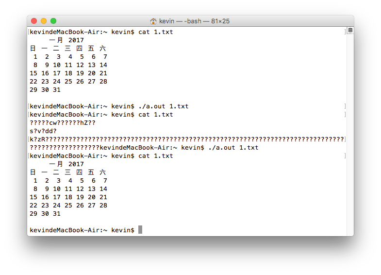

2016/10/16
Author: guoqzuo
c语言文件操作 - 简单的文件加密解密
文件加密对小白来说是一个很高大上的技术，但也不是那么遥不可及。只要学了C语言的文件操作，就可以用简单的文件操作方法，对文件进行简单的加密。
文件取反加密
思路是先打开文件，再读取文件的每一字节，取反之后再写入文件。运行一次后，文件的每一个字节都取反了，内容肯定是乱了。就相当于加密了，再运行一次就会还原，相当于解密。代码如下:
/*
* C语言 运行一次加密，再运行一次解密
* Sun Oct 16 15:23:23 2016
* Create by Kevin Zuo
*/
#include <stdio.h>
#include <stdlib.h>
int main(int argc, char* argv[])
{
// 用第二个参数来接收要加密的文件
if (argc < 2) {
printf("参数错误，找不到文件!\n");
return 1;
}
FILE* fp = fopen(argv[1],"r+");
if (fp == NULL) { // 如果打开文件失败
perror("open()");
return 2;
}
while (1) { // 遍历改文件的每一个字节，取反
char buf;
int n = fread(&buf, 1, 1, fp); // 读取一个字节的内容,存入buf
if (n == 0) break; // 读到文件结尾就退出
buf = ~buf; //对自己取反
fseek(fp, -1, SEEK_CUR); // 读一位之后，文件指针会后移,修改时需将文件指针向前移动一位
fwrite(&buf, 1, 1, fp); // 将取反的结果再写入文件
}
fclose(fp); // 关闭文件
exit(0);
}测试程序效果：

这个程序有个缺点就是不能对文件夹也就是目录加密，有了这个思路以后，就可以以此内推打造自己的加密算法了。